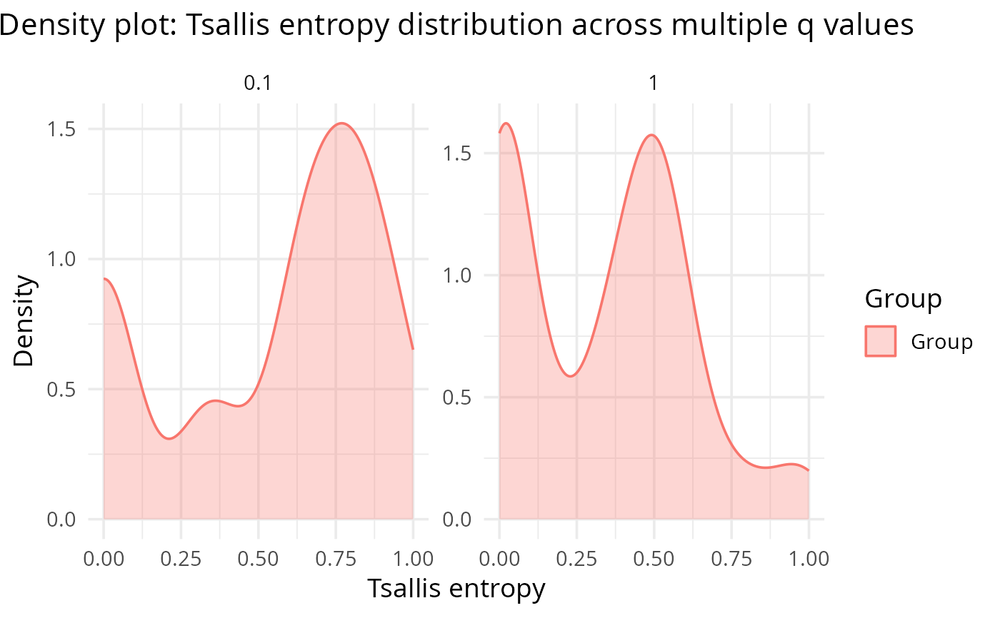

Density plot of Tsallis entropy for multiple q values
Source:R/generate_plots.R
plot_tsallis_density_multq.RdDensity plot of Tsallis entropy for multiple q values
Examples
data("tcga_brca_luma_dataset", package = "TSENAT")
rc <- as.matrix(tcga_brca_luma_dataset[1:20, -1, drop = FALSE])
gs <- tcga_brca_luma_dataset$genes[1:20]
se <- calculate_diversity(rc, gs, q = c(0.1, 1), norm = TRUE)
plot_tsallis_density_multq(se)
